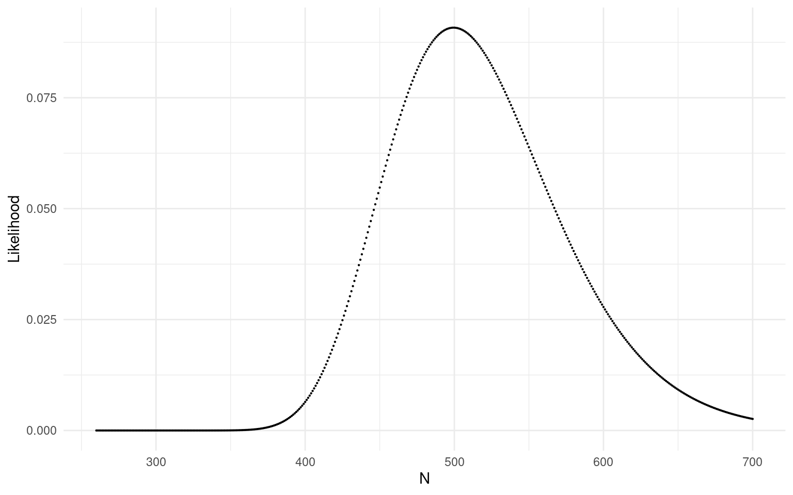

You can also download a PDF copy of this document.
Conservation researchers conducted a survey to estimate the abundance of a species of “larkspur” (a flowering plant of the genus Delphinium) in an irregularly-shaped region. To survey the larkspur they divided the region into 150 one-meter wide transects from north to south. But because of the irregular shape of the region the transects were not all of equal area. The total area of the region (and hence all of the transects) was 5897 square meters. The researchers selected a sample of 20 transects using simple random sampling. The mean number of plants in these sampled transects was 21.45 larkspur, and the mean area of these sampled transects was 28.395 square meters. Note that we can view this design as a one-stage cluster sampling design where the transects are the clusters and the larkspur are the elements.1 For your calculations below note that \(n\bar{y} = \sum_{i \in \mathcal{S}} y_i\) and \(n\bar{x} = \sum_{i \in \mathcal{S}} x_i\), so you can find those sums for your calculations from the number of sampled transects and the mean of the variable. You may also find it useful to note that \(y_i = m_i\) if \(y_i\) is the number of larkspur in the \(i\)-th transect.
Using the “unbiased” estimator (i.e., the estimator that does not use an auxiliary variable), confirm that the estimate of the number of larkspur in the region is approximately 3218 larkspur. Using the “ratio” estimator with transect area as the auxiliary variable, confirm that the estimate of the number of larkspur in the region is approximately 4455 larkspur.
Now suppose that the researchers are interested in estimating the number of larkspur in the region that are infected with a fungus. The researchers find that the total number of infected larkspur in the sampled transects is 129 plants. Confirm that using the “unbiased” estimator with no auxiliary variable that the estimated number of infected larkspur is 967.5 plants. Also confirm that using the ratio estimator with the number of larkspur in the transects as an auxiliary variable that the estimated number of infected larkspur is approximately 1323 (assume that we somehow know that the total number of larkspur in the region is 4400). Finally confirm that using the ratio estimator with the transect area as an auxiliary variable that the estimated number of infected larkspur is approximately 1340.
Recall once again the example from an earlier homework where the researchers had a population of 744 leaves and used leaf weight as an auxiliary variable to estimate mean leaf area. They obtained a simple random sample of 20 leaves and found that the mean weight of the leaves in that sample was 1.06 grams. They also know that the total weight of all the leaves is 745.2 grams.
Suppose the researchers do not know the number of leaves in the population (i.e., they do not know that \(N\) = 744). Using a ratio estimator with leaf weight as the auxiliary variable, confirm that the estimated number of leaves in the population is approximately 703 leaves.
Now suppose the researchers want to estimate the number of leaves in the population that are infected with a particular fungus. In their sample of 20 leaves they find that 8 of the leaves are infected with the fungus. There are a couple of ways they could estimate the number of infected leaves in the population. One is that if they do not know \(N\) they could use a ratio estimator with weight as an auxiliary variable. The other is that if they know \(N\) they could estimate the number of infected leaves without the auxiliary variable. Confirm that the estimate from the first estimator is approximately 281 infected leaves, and that the estimate from the second estimator is approximately 298 infected leaves.
Researchers at the National Institutes of Hobbit Health (NIHH) want to estimate the number of Hobbits in a village of 500 Hobbits that have foot lice. Accurate diagnosis of the presence of foot lice is an expensive time-consuming process, so the researchers used a survey with a simple random sampling design to obtain a sample of 100 Hobbits. In this sample 30 Hobbits were found to have foot lice. The researchers had also mailed to each Hobbit in the village a home test kit where they could self-diagnose the presence of foot lice. Hobbits that detected the presence of foot lice using the home test were asked to report the positive result to the NIHH. The home test is not completely accurate, and also some Hobbits might not report their positive test result, and some Hobbits might never use their home test.2 But it could still be used as an auxiliary variable. A total of 100 Hobbits from the village reported a positive test result to the NIHH. In the sample, 25 of the Hobbits had reported a positive test result using the home test. Use the information above to confirm that the estimate of the number of Hobbits infected with foot lice using the expansion estimator is 150 Hobbits, and the estimate using the ratio estimator (with the reporting of a positive test result as the auxiliary variable) is 120 Hobbits.
Suppose I have a jar of jelly beans. I remove a handful of 50 jelly beans, carefully poke a hole through each jelly bean using a needle, and then put those jelly beans back in the jar. I then shake the jar and remove a handful of 100 jelly beans. In this sample of jelly beans I notice that 16 of the jelly beans have holes. Confirm that the estimates of the number of jelly beans in the jar is 312.5 jelly beans using the Lincoln-Petersen estimator, 302 jelly beans using the Chapman estimator, and 312 jelly beans using the maximum likelihood estimator (based on the hypergeometric model).
Researchers used a mark-recapture study to estimate the population of Hobbits in the East Farthing. After marking an initial sample of Hobbits, they obtained a second sample of 200 Hobbits, and found that 40 of these were marked. The figure below shows the likelihood function for the parameter \(N\) based on the hypergeometric model. What is the approximate estimate of \(\hat{N}\) based on the maximum likelihood estimator?

| List A | included | excluded | Total |
|---|---|---|---|
| included | 794 | 710 | 1504 |
| excluded | 741 | ? | ? |
| Total | 1535 | ? | \(N\) |
Confirm that the estimate of the number of births using the Lincoln-Petersen estimator is about 2908 births.
Recall the examples from class where “marked” elements might simply be a subset of known elements (e.g., the known shipwrecks in an area or the known cases of employees reporting sexual harassment). In one-stage cluster sampling designs the number of “marked” units per cluster can then be used as an auxiliary variable in ratio estimators. Consider a survey to estimate the number of widgets in a warehouse. The widgets are contained in a total of 1000 boxes that each contains several widgets. There are several types of widgets in the warehouse and it is known that there are exactly 5500 Type IV widgets in the warehouse (the number of widgets of other types is unknown). A sample of 3 boxes is selected using simple random sampling. The first box contains 20 widgets, of which 5 are Type IV widgets. The second box contains 25 widgets, of which 4 are Type IV widgets. The third box contains 30 widgets, of which 6 are Type IV widgets. There are a couple of ways we could estimate the number of widgets (of any type) in the warehouse. One would be to use an unbiased estimator that does not make use of the number of Type IV widgets in the warehouse or per box. Confirm that this estimate is 25000 widgets. The other is to use a ratio estimator that uses the information about the number of Type IV widgets. Confirm that this estimate is 27500 widgets.
Recall that when clusters are selected using simple random sampling, a one-stage cluster sampling design can also be viewed as a simple random sampling design if we view the clusters as elements and the cluster totals — i.e., \(y_i = \sum_{j=1}^{m_i} y_{ij}\) as the target variable.↩︎
Here the sensitivity and specificity is not just a function of the diagnostic qualities of the home test. They also depend on the cooperation (or lack thereof) of the Hobbit!↩︎